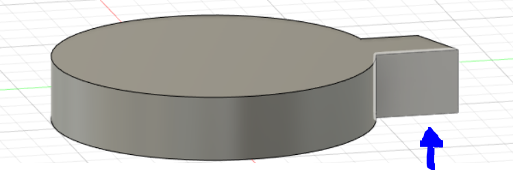
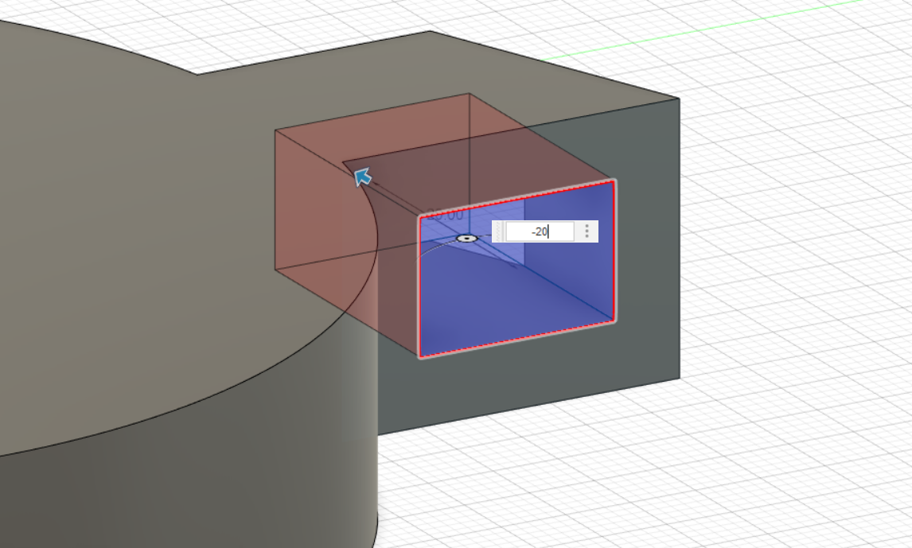
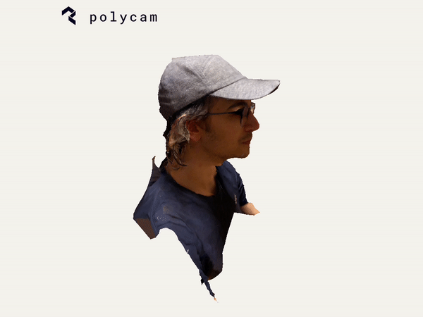

Week 4: 3D Design and Printing
For my 3D printing assignment I first had to make a quick 10 minute print, I chose to make a charger
The wall sockets in Europe are different from American ones, so I always had to pack these

Me and my family would always fight for who got to use them first so it was pretty cool to model and make a small version without purpose

It was a pretty small print but I was happy with how it turned out. I plan to keep it as a memento of my time at harvard and my trips to Europe
However, memories can only get me so far and it was time to look toward the future, my upcoming final project
I decided it would be a good idea to model out a first draft of the wheel that will be used to scoop up dirt in my final project

You start off my creating a circle with a circle, create construction lines thorugh the middle to help guide and then set the length you want the collector to be
Once that done you can extrude the piece, for me I chose to extrude it by 20mm
When its extruded draw a new sketch on the face labelled, this part will be hollowed out in order to collect dirt
Finally, create a square and extrude it by a negative value in order to hollow out the piece I again used 20 mm

The first draft of this wasnt very succesful and I had to try and create it again

What I had to change was when I decided to mirror the collector, if you do it once the wheel is extruded you can run into some issues
The second draft was a lot better, but while I was printing I realized a couple flaws, for starters I had to find a way to make the inside of the wheel hollow to hold the dirt
The second problem was that there were some holes in the print that shouldnt have been there, a problem with my poor modeling in fusion360 for sure

3D Printer time lapses are some of the most satisfying things to watch

Aditionally, I was also assigned to take a photogrammetry to make a 3D scan, I obviously decided to do my face
Believe it or not this scan is my 5th one, I couldnt get much better since I was too busy laughing at my friend waddling around me with his phone camera
Either way, now that im a bit more experienced with 3D printing I do plan on working on this again whenever I get the chance
Will update when I can